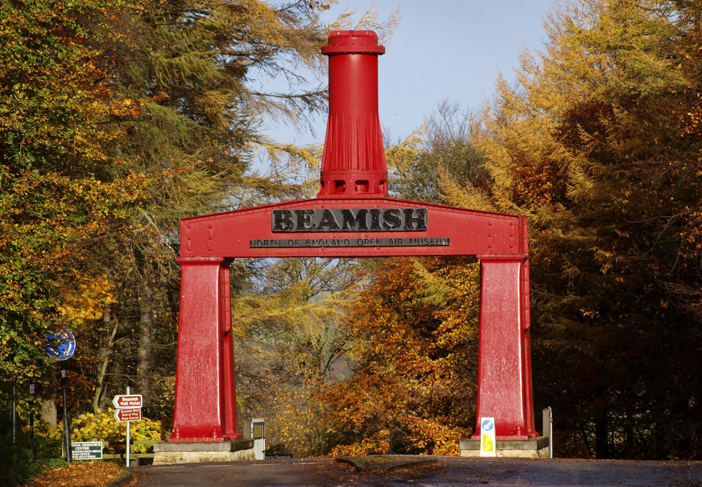

Experience History
Welcome to Beamish, the open-air living museum. See the North as it used to be, from the beginnings of the Industrial Revolution all the way to the 1950s. Walk through replica streets, meet costumed actors, witness traditional skills, and buy from historic shops. Keep an eye on our website for exciting special events.

Tickets
Buy one ticket and return on any day within a year of purchase, with our Beamish Unlimited Pass, so there's no need to cram everything into one day. Prices range from £20.50 for children to £96.00 for families. Also available are gift vouchers and scooter and wheelchair hires. Purchase tickets below via our external provider.
Buy Tickets